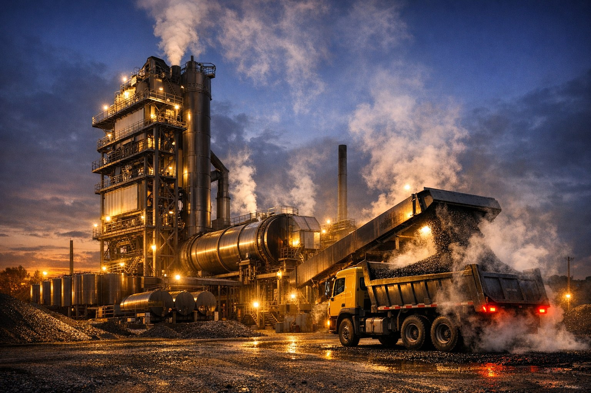

01 / ПРЕИМУЩЕСТВО
Решение под объём
Подбираем конфигурацию завода и узлов под задачи производства.
Направление 02 · Асфальтобетонные заводы
Стационарные и мобильные заводы, рециклинг асфальтогранулята, горелки, битумное хозяйство и автоматика. От подбора оборудования до запуска на объекте.

Работаем с 2011 года. Инженеры компании взаимодействуют с заводами напрямую и помогают пройти путь от выбора оборудования до его запуска.
Подбираем конфигурацию завода и узлов под задачи производства.
В линейке представлены стационарные QC и мобильные QSQ, QCS.
Оборудование для работы с асфальтогранулятом, включая решения QCM, QCRQ и QSRX.
Горелки, сушильные барабаны, битумное хозяйство и системы SMARTABZ, SMARTMIX.
Производство асфальта начинается с правильно подобранной технологической линии.
Состав решения и условия работ согласуем до оформления заказа.
Обсуждаем требуемый объём, тип завода, топливо и технологические задачи.
Формируем предложение по заводу, горелке, битумному хозяйству и автоматике.
Согласуем договорные сроки, организуем шеф монтаж и пуско наладку.
Среди выполненных работ: поставка и запуск газовой горелки A-TECH для установки LB2000 в 2013 году, шеф монтаж битумного хранилища в 2020 году и изготовление сушильного барабана в 2015 году. Полный список проектов: sdors.ru/proekty.
Да. В маркетинг ките указаны мобильные заводы QSQ и QCS, а также стационарные решения QC.
Да. Компания предлагает оборудование для рециклинга, включая линейки QCM, QCRQ и QSRX.
Да. В линейке указаны горелки A-TECH, EBICO, Riello и Baltur. Подбор зависит от конкретной установки и требований проекта.
Да. В перечень входят плавилки, танки, купольные резервуары, эмульсионные установки и оборудование для ПБВ.
Компания предлагает системы АСУ SMARTABZ и SMARTMIX. Состав решения уточняется при подборе.
Да. Помимо АБЗ, компания указывает бетонные заводы, грунтосмесительные установки и АБЗ по новым ГОСТам.
Расскажите, какое оборудование или комплектующие нужны. Подготовим предложение после уточнения исходных данных.
Телефон
+7 (3952) 43 67 23
+7 (924) 605 50 05
Электронная почта
info@sdors.ru
Адрес
Иркутск, ул. Рабочего Штаба, 1/7
Пн–пт, 9:30–18:00